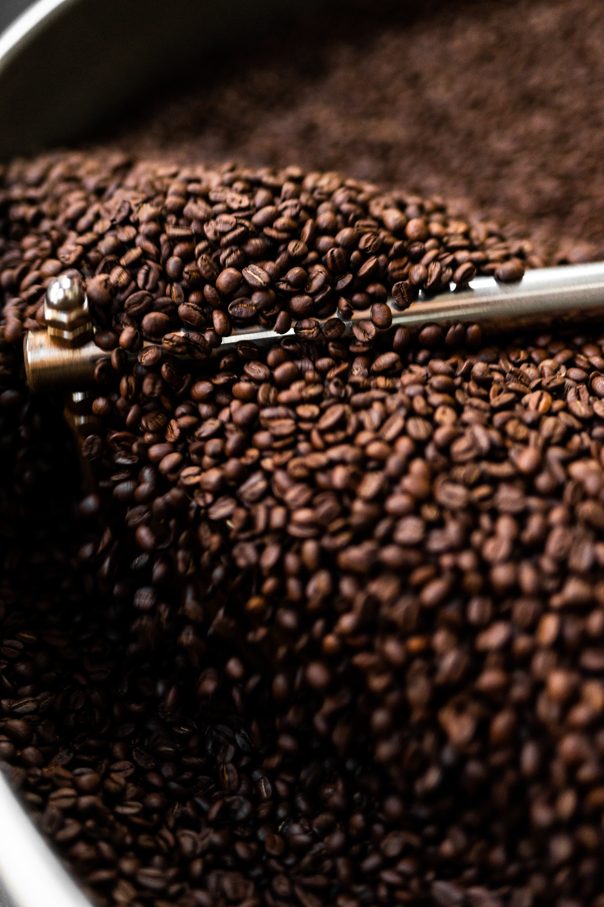

專業服務 度身訂造Professional Services, Tailored Solutions
從自家烘焙到訂製混豆，從全港配送到海外郵寄，為您提供一站式專業服務。From own roasting to custom blending, from HK-wide delivery to international shipping — one-stop professional service for your business.

自家烘焙工廠Own Roasting Facility
自1975年建立自家烘焙工廠以來，我們一直堅持從生豆選購到烘焙出貨全程掌控品質。專業烘焙團隊根據不同豆種特性，精準調校烘焙溫度及時間，確保每一批咖啡豆風味穩定、香氣飽滿。Since establishing our own roasting facility in 1975, we have maintained complete quality control from green bean sourcing to final delivery. Our professional roasting team precisely adjusts temperature and timing based on each bean variety's characteristics, ensuring consistent flavor and rich aroma in every batch.
無論您需要淺焙、中焙或深焙，單一產區或混合配方，我們都能為您提供最合適的烘焙方案。新鮮烘焙、即時供應，讓您的顧客品嚐到最佳風味。Whether you need light, medium or dark roast, single origin or custom blends, we provide the most suitable roasting solution for you. Fresh roasted and promptly delivered so your customers enjoy optimal flavor.
烘焙流程：Roasting Process:
- 生豆品質篩選Green bean quality screening
- 精準溫度控制Precise temperature control
- 專業烘焙技術Professional roasting technique
- 品質檢測出貨Quality inspection & delivery

訂製混豆服務Custom Blending Service
每間餐廳都有獨特的風格與客群，我們提供專業的訂製混豆服務，根據您的需求調配出專屬的咖啡或茶葉配方。無論是調整濃度、酸度、苦味或香氣，我們的專業團隊都能為您度身訂造最合適的混豆方案。Every restaurant has a unique style and clientele. We offer professional custom blending services to create exclusive coffee or tea formulations tailored to your needs. Whether adjusting strength, acidity, bitterness or aroma, our expert team crafts the perfect blend for you.
我們提供咖啡豆及港式奶茶茶葉的訂製服務，從小量試樣到大批量生產，靈活配合您的業務需求。建立專屬配方後，我們確保每一批產品都能維持一致的品質標準。We provide custom blending for both coffee beans and HK-style milk tea. From small sample batches to large-scale production, we flexibly accommodate your business needs. Once your exclusive formula is established, we ensure every batch maintains consistent quality standards.
💡 訂製流程簡單快捷💡 Simple & Fast Process
1️⃣ 溝通需求 → 2️⃣ 配方建議 → 3️⃣ 試樣確認 → 4️⃣ 批量生產 1️⃣ Discuss needs → 2️⃣ Formula proposal → 3️⃣ Sample approval → 4️⃣ Mass production
全港18區配送All 18 Districts
全港物流配送HK-wide Delivery Service
我們擁有自家車隊，覆蓋全港18區，提供定期送貨服務。無論您的餐廳位於港島、九龍或新界，我們都能準時可靠地將產品送達。穩定的供應鏈及專業的物流團隊，確保您的業務運作順暢。We operate our own fleet covering all 18 districts in Hong Kong with regular delivery schedules. Whether your restaurant is on Hong Kong Island, Kowloon or New Territories, we deliver promptly and reliably. Our stable supply chain and professional logistics team ensure smooth business operations.
除了本地配送，我們亦提供海外郵寄服務，讓世界各地的客戶都能享用優質的港式咖啡及茶葉產品。Beyond local delivery, we also offer international shipping services, allowing customers worldwide to enjoy premium Hong Kong-style coffee and tea products.
本地配送Local Delivery
全港18區All 18 Districts
海外郵寄International
全球配送Worldwide Shipping